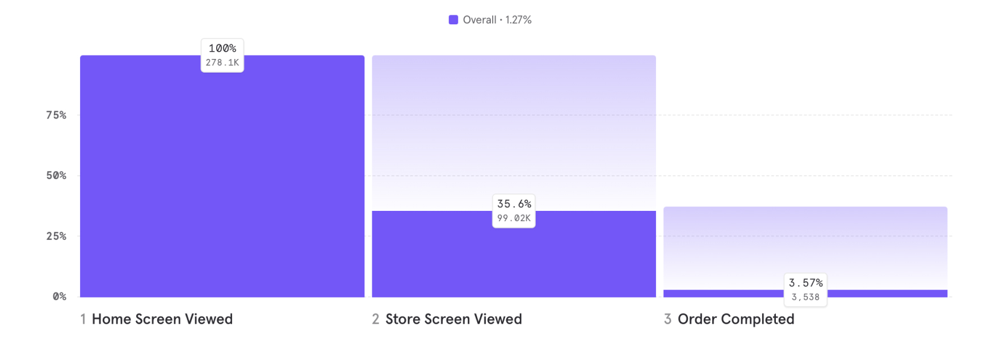
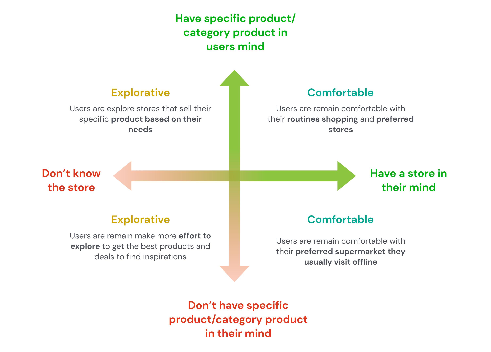
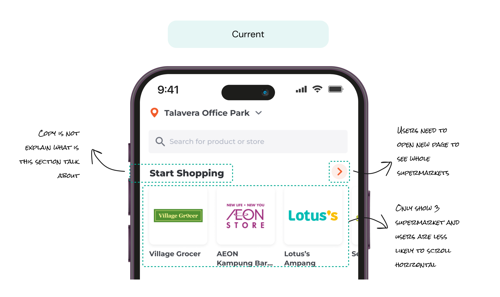
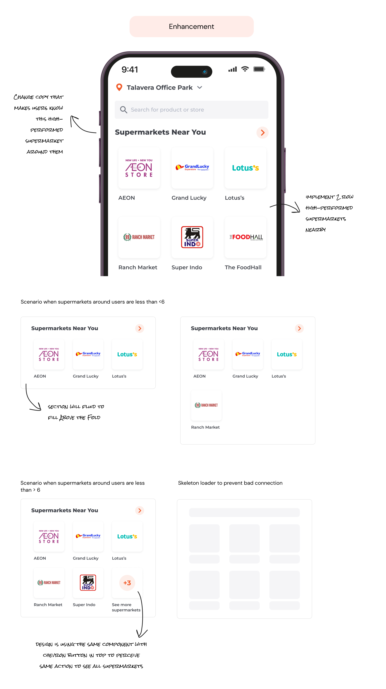
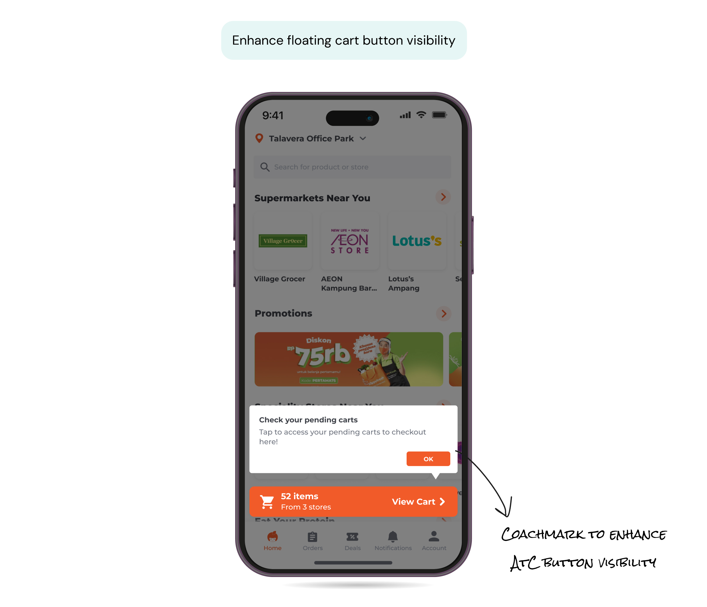

Role: Product Designer
Team: Product Designer, Researcher, Product Analyst, Product Manager
Platform: iOS, Android
Timeline: 1 Month
Approx. Reading Time: 5mins to read
Metric: %CVR to Store Home & Order Complete
Problem Statement
HappyFresh is an online groceries platform in 3 countries (Thailand, Malaysia and Indonesia) and now focused
only in Indonesia market, previously Global Home is heavily focused HappyFresh Supermarket in Above the Fold
while the service itself has been closed and it hasn’t been adjusted to facilitate the company objective to
increase daily orders sehingga menghasilkan banyak drop rate dari Global Home ke store home. And Current
Global home page has loads of information scatered in a non sequential way. there are sections which occupy
real estate on Global Home that needs to be relooked.

Number of user drop rates from Global home to store home until order completed
Current Observation
✽ After removed HappyFresh Supermarket, store view visited conversion is not statistically
significant as it did not yield convincing results.
✽ Users who did not click on the “Supermarket Near You” section told us that it’s too
overwhelming for them to scroll down to look for a store. Users just want get their goals done, and they
think the old global home is too cluttered, and they do not intend to explore the abyss.
Observation User Behavior Towards Choose Supermarket in HappyFresh

Proposed Solution
With the revamp global home users will more easily to find their favorite store, thus Higher % Home to Store
Home / Order completed with:
✽ Enhance the accessibility of Supermarket tiles section to help users easily find their favorite
or nearby store.
✽ Enhance floating action cart button visibility so user who already put basket can easily convert
to Order complete.
✽ Revisit info architecture of navigation in Global Home to make it more simple and cognitive ease
of accessibility.
Enhance the Supermarket Section


Enhance floating action cart button visibility

Results
✽ By implementing 2 rows supermarket section, CTR to Store Screen from supermarket section increased
6%rel.
✽ Giving visibility to see more supermarkets able to increase user focus on supermarket sections
they’re more likely to visit supermarket list ~20%rel higher compared to users with 1 row supermarket and able
to increase CVR to store screen.
✽ Coachmark is helping customer to checkout their pending carts by CVR Home - Order Complete.
Lesson Learned
✽ Knowing tech-feasibility to execute the idea is important, so can improve the design decision to
get high-performance CVR results.
✽ Global home revamp in the importance of simplifying design in cognitive ease, ease of
accessibility, and navigation, removing insubstantial components and focusing on nitty-gritty components or
basic tenets.